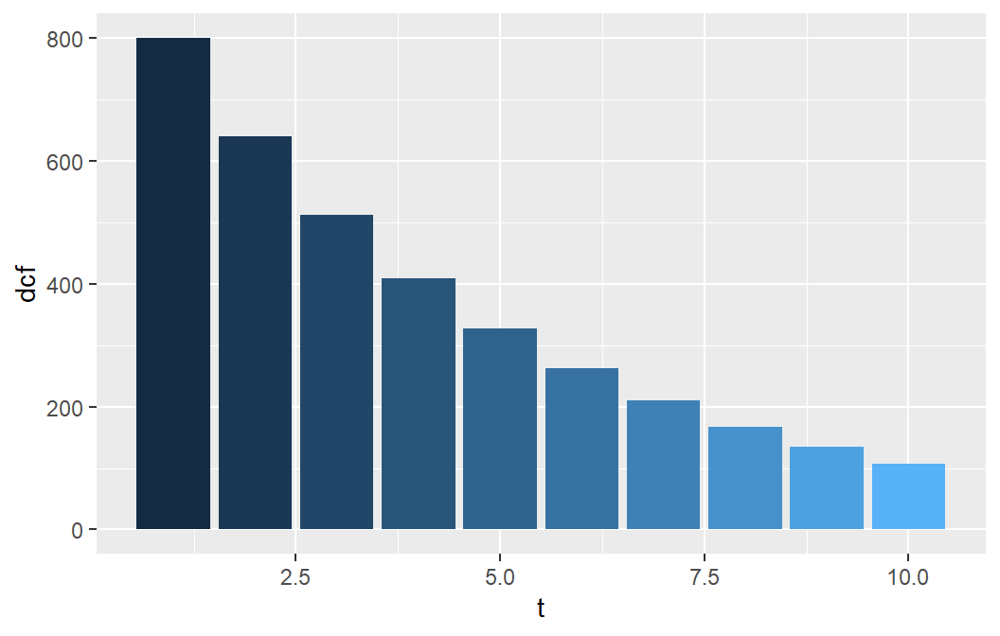

My abstract.
Keywords: My Keywords
On the first decade of the 21ft century the global economy has experienced the dot-com and real estate bubbles that bursted and impacted the lives of many people on different ways. Some authors claim that these bubbles could have been avoided if basic principles from finance and economics were applied during the euphoria (Koller, 2006). The basic principles indicated by these authors are related to value creation and the methods to proof that an asset is creating value.
On one side, the creation of value for a given asset (e.g. a company) is related to the Free Cash Flow that it generates, where this Free Cash Flow must be higher than the cost of capital used to put this asset to work (Assaf Neto, 2004). On the other side, the methods used to proof that an asset is creating value is related to the financial and mathematical framework used on the analysis. These financial and mathematical framework are generally called Valuation.
The Valuation is a technique used to calculate the value of an asset and is broadly used on the financial sector (Assaf Neto, 2004). Within this area, there are different methods that can be used to infer the asset’s value and one of the most used and recommended is the Discounted Cash Flow Valuation. This method tries to project the future Free Cash Flow (FCF) that an asset will generate and applies a rate to discount these future FCF, where this rate will represent the cost of capital. This cost of capital exist to represent the investors that allocates capital on the asset being evaluated and it contemplates both risk and opportunity cost.
Projecting FCF, discounting it by the cost of capital and summing up the periods projected is the foundation of this method, that will result in a value that represents the asset’s value. In other words, this method indicates that an asset will value the sum of future free cash flows after being discounted by the cost of capital. The method seems simple, but it’s often forgotten by investors, leading to decisions that, when in conjunction with other circumstances, create bubbles that can be avoided, like the dot-com bubble from the 2000’s or the real state bubble from 2007/08.
The Discounted Free Cash Flow Valuation is well recommended on the academia (Damodaram, 2012), but the method will generate a deterministic result. This deterministic result informs the asset’s value, but it doesn’t inform the distribution of values that will exist if the model incorporates the risk during the Free Cash Flow projections. This risk on the projections was first incorporated by McKisney Company during the 1980, that applied the Monte Carlo Simulation together with the Discounted Free Cash Flow Valuation (Sharma; Peacock, 2008).
The simulation applied on Discounted Cash Flow Valuations is a recommended approach by practitioners but the literature covering the way to build a model to run this simulation isn’t broad. This research will attempt to cover this gap, showing the step-by-step method to develop a Discounted Cash Flow Valuation using Monte Carlo Simulations to generate a distribution probability of values for an asset.
The Discounted Free Cash Flow Valuation can be explained with a simple example, that will grow in complexity in a smooth way. First it’s necessary to get the asset’s Free Cash Flow. For this illustration, let’s assume the asset is a company. On this case, the Free Cash Flow can be found on the company’s Balance Sheet and Profit and Loss Statement. These documents will indicate the revenues, costs, expenditures, taxes and investments for a specific period. With these variables, it’s possible to solve the following equation and find the company’s Free Cash Flow:
\[FCF = ((R-C-E).(1-t))-I\] Where:
R = Revenue.
C = Cost of Products Sold.
E = Expenses.
t = Tax rate.
I = Investments.
After calculating FCF, it’s necessary to get the cost of capital for the investors that allocated capital on the company. This cost of capital will account for internal and external investors and the recommended method to estimate this cost is the Weigt Average Cost of Capital (WACC), that will look at the company’s capital structure in terms of capital division between internal and external, and calculate the cost for each type of investor in order to generate the weigh average. The WACC equation is presented as follows:
\[WACC = I_i.K_d + E_i.K_e\] Where:
\(I_i =\) Capital share for internal investors.
\(K_d =\) Cost of capital for internal investors.
\(E_i =\) Capital share for external investors.
\(K_e =\) Cost of capital for external investors.
The capital structure for the company can be calculated using the company’s Balance Sheet that will inform on liabilities the parcel of that came from Internal and External investors. The cost of capital for external investors will be in the form of financial expenditures indicated on the Profit and Loss statement, where the ratio of financial expenditures over the amount of loan on the period will indicate the cost of capital for these investors.
The cost of capital for internal investors relies on a model called Capital Asset Pricing Model (CAPM). This model infer how much return internal investors will demand for the evaluated asset, using as proxy a free risk return rate and a risk rate that represent the company’s risk, like a premium risk. The equation for this model is described below:
\[K_d = R_f + \beta(R_m-R_f)\]
Where:
\(R_f =\) Return rate for asset with zero risk.
\(R_m =\) Market return rate.
\(\beta =\) Company’s beta.
For \(R_f\) it’s recommended to use government’s bonds that is the nearest of a free risk asset. For market return, the S&OP 500 rate of return in one year is the recommended proxy. The company’s beta measure the covariance of the company’s volatility with the market volatility. The equation for calculating beta if described below:
\[\beta = \frac{COV(R_i,R_m)}{VAR(R_m)}\] Where:
\(R_i =\) Asset’s return rate.
\(R_m =\) Market’s return rate.
After calculating each variable, it’s possible to develop the Discounted Free Cash Flow Valuation in order to reach the Enterprise Value (EV), with the final equation:
\[EV = \sum_{t=1}^n\frac{FCF_1}{(1+r)^1} + \frac{FCF_2}{(1+r)^2} + ... \frac{FCF_t}{(1+r)^t} + RV \]
Taking a simple approach to understand each variables impact on company’s valuation.
The above graph shows each Discounted Cash Flow for the 10 years projection.

## # A tibble: 1 x 1
## company_value
## <dbl>
## 1 3571.In order to calculate the company’s value it’s necessary to have the historical values of the necessary variabbles present on the following equations: